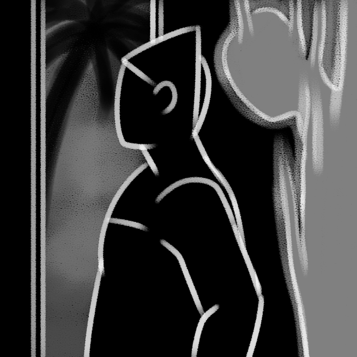

EA
by hinahina gray

While I can hear the whistling of Nu’uanu outside my window, the stillness of Honolulu during social isolation has created its own makemakani, though the wind that has been stolen is our breath. Laughing, sighing, yelling, cheering, all our breath seems to be gone, and I can feel the spirits drawing closer to our sides.
breathe in | breathe out
hinahina's website